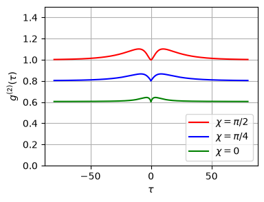
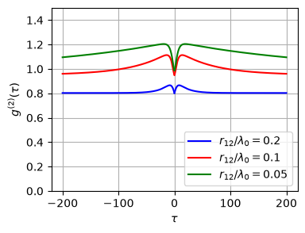
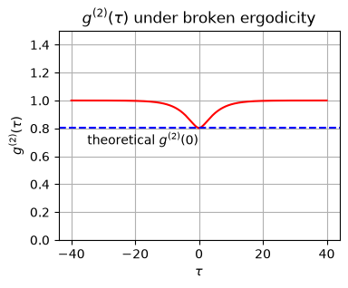

12.2. Dimer II: QME - Indistinguishability and broken ergodicity#
In this section, we investigate the properties of radiation where the steady state is defined as \(\rho_{ss} = \displaystyle\lim_{r_{12}\rightarrow 0} \displaystyle\lim_{t \rightarrow \infty} \rho(t)\). At the end, we discuss the case where the ergodicity is broken by reversing the order of the limits.
12.2.1. Preparation for numerical calculation#
The following code cell defines constants
# This code block defines parameters, operators,
# and functions to be used in the later code cells
import matplotlib.pyplot as plt
import numpy as np
from qutip import *
# constants
omega0 = 1.0
gamma0 = 0.1
temperature = 1.0
NT = 1/(np.exp(omega0/temperature)-1)
# sigma operators
i2 = qeye(2)
sz = [tensor(sigmaz(),i2),tensor(i2,sigmaz())]
sp = [tensor(sigmap(),i2),tensor(i2,sigmap())]
sm = [tensor(sigmam(),i2),tensor(i2,sigmam())]
# eta operators
ep = [(sp[0]+sp[1])/np.sqrt(2),(sp[0]-sp[1])/np.sqrt(2)]
em = [(sm[0]+sm[1])/np.sqrt(2),(sm[0]-sm[1])/np.sqrt(2)]
# product basis
u=[]
u.append(tensor(basis(2,0),basis(2,0)))
u.append(tensor(basis(2,1),basis(2,0)))
u.append(tensor(basis(2,0),basis(2,1)))
u.append(tensor(basis(2,1),basis(2,1)))
# Dicke basis
v=[]
v.append(u[0])
v.append((u[1]+u[2])/np.sqrt(2))
v.append((u[1]-u[2])/np.sqrt(2))
v.append(u[3])
# Gamma_12
def G12(r12,theta):
xi=2*np.pi*r12
if xi==0:
gamma12 = gamma0
else:
gamma12 = (1-np.cos(theta)**2)*np.sin(xi)/xi + (1-3*np.cos(theta)**2)*(np.cos(xi)/xi**2 - np.sin(xi)/xi**3)
gamma12 = gamma12*gamma0*3/2
return gamma12
# operators for the Liouvillian
def system_dimer(r12,theta):
# Hamiltonian
H = 0.5*omega0*(sz[0]+sz[1])
# get gamma_12
gamma12 = G12(r12,theta)
# collapse operators
gamma_s = gamma0 + gamma12
gamma_a = gamma0 - gamma12
c_ops = []
c_ops.append(np.sqrt(gamma_s*(NT+1))*em[0])
c_ops.append(np.sqrt(gamma_a*(NT+1))*em[1])
c_ops.append(np.sqrt(gamma_s*NT)*ep[0])
c_ops.append(np.sqrt(gamma_a*NT)*ep[1])
return H, c_ops
# second-order coherence function
def coherence2(H,c_ops,rho_ss,r12,chi,times,):
phi = 2*np.pi*r12*np.cos(chi)
G2 = correlation_3op_1t(H,rho_ss,times,c_ops,ep[0],ep[0]*em[0],em[0],solver="me")*(4-2*phi**2)
G2 += correlation_3op_1t(H,rho_ss,times,c_ops,ep[0],ep[1]*em[1],em[0],solver="me")*phi**2
G2 += correlation_3op_1t(H,rho_ss,times,c_ops,ep[1],ep[0]*em[0],em[1],solver="me")*phi**2
G2 +=-correlation_3op_1t(H,rho_ss,times,c_ops,ep[0],ep[0]*em[1],em[1],solver="me")*phi**2
G2 += correlation_3op_1t(H,rho_ss,times,c_ops,ep[0],ep[1]*em[0],em[1],solver="me")*phi**2
G2 += correlation_3op_1t(H,rho_ss,times,c_ops,ep[1],ep[0]*em[1],em[0],solver="me")*phi**2
G2 +=-correlation_3op_1t(H,rho_ss,times,c_ops,ep[0],ep[1]*em[1],em[0],solver="me")*phi**2
G2 += correlation_3op_1t(H,rho_ss,times,c_ops,ep[0],ep[0]*em[0],em[1],solver="me")*(2j*phi)
G2 +=-correlation_3op_1t(H,rho_ss,times,c_ops,ep[1],ep[0]*em[0],em[0],solver="me")*(2j*phi)
G2 += correlation_3op_1t(H,rho_ss,times,c_ops,ep[0],ep[0]*em[1],em[0],solver="me")*(2j*phi)
G2 +=-correlation_3op_1t(H,rho_ss,times,c_ops,ep[0],ep[1]*em[0],em[0],solver="me")*(2j*phi)
IR = expect(ep[0]*em[0],rho_ss)*(2-phi**2/2)+(phi**2/2)*expect(ep[1]*em[1],rho_ss)
g2 = G2.real/(IR.real)**2
return IR.real, G2.real, g2.real
12.2.2. Steady states#
The following code computes the steady state for given parameters. We check
if the steady state is the thermal state
coherence in the product basis
coherence in the Dicke basis
# parameters
r12 = 0.1 # distance relative to wavelength
chi= np.pi/3 # angle between R and r_12
theta = np.pi/4 # angle between dipole moment and r_12
phi = 2*np.pi*r12*np.cos(chi)
# get the Liouvillian
H, c_ops = system_dimer(r12,theta)
# get steady state
rho_ss = steadystate(H,c_ops)
# thermal state
Z=2+np.exp(-omega0/temperature)+np.exp(omega0/temperature)
pee = np.exp(-omega0/temperature)/Z
pss = 1/Z
paa =1/Z
pgg = np.exp(omega0/temperature)/Z
print("*** steady state in the product basis ***")
print("ρ_ee,ee = {0:7.4f} ({1:7.4f})".format(rho_ss[0,0].real,pee))
print("ρ_eg,eg = {0:7.4f} ({1:7.4f})".format(rho_ss[1,1].real,pss))
print("ρ_ge,ge = {0:7.4f} ({1:7.4f})".format(rho_ss[2,2].real,paa))
print("ρ_gg,gg = {0:7.4f} ({1:7.4f})".format(rho_ss[3,3].real,pgg))
print("\n*** coherence in the product basis***")
print("ρ_eg,ge = {0:7.4f}".format(rho_ss[1,2]))
# change the basis to the Dicke basis
rho_d = np.zeros((4, 4), dtype=complex)
for i in range(4):
for j in range(4):
rho_d[[i],[j]] = rho_ss.matrix_element(v[i],v[j])
print("\n*** steady state in the Dicke basis ***")
print("ρ_ee = {0:7.4f} ({1:7.4f})".format(rho_d[0,0].real,pee))
print("ρ_ss = {0:7.4f} ({1:7.4f})".format(rho_d[1,1].real,pss))
print("ρ_aa = {0:7.4f} ({1:7.4f})".format(rho_d[2,2].real,paa))
print("ρ_gg = {0:7.4f} ({1:7.4f})".format(rho_d[3,3].real,pgg))
print("\n*** coherence in the Dicke basis***")
print("ρ_sa = {0:7.4f}".format(rho_d[1,2]))
*** steady state in the product basis ***
ρ_ee,ee = 0.0723 ( 0.0723)
ρ_eg,eg = 0.1966 ( 0.1966)
ρ_ge,ge = 0.1966 ( 0.1966)
ρ_gg,gg = 0.5344 ( 0.5344)
*** coherence in the product basis***
ρ_eg,ge = 0.0000+0.0000j
*** steady state in the Dicke basis ***
ρ_ee = 0.0723 ( 0.0723)
ρ_ss = 0.1966 ( 0.1966)
ρ_aa = 0.1966 ( 0.1966)
ρ_gg = 0.5344 ( 0.5344)
*** coherence in the Dicke basis***
ρ_sa = -0.0000+0.0000j
12.2.3. Second-order coherence: dependence on \(\chi\)#
We fix \(r_{12}/\lambda_0 = 0.2\) and change the angle \(\chi\) from \(0\) to \(\pi/2\). As the detector moves, the second-order coherence changes. For \(\chi=\pi/2\), no anti-bunching is observed; instead, some bunching with a small time delay appears. This bunching disappears as \(\chi\) is reduced, and the anti-bunching increases. It approaches the incoherent limit obtained in Chapter 11.
The theoretical value (12.3) agrees with the QuTiP result, confirming the validity of the numerical calculation.
r12 = 0.2
times = np.linspace(0, 80, 500)
g2_0 = []
plt.figure(figsize=(4,3))
# chi = pi/2
chi = np.pi/2
H, c_ops = system_dimer(r12,theta)
rho_ss = steadystate(H,c_ops)
IR, G2, g2 = coherence2(H,c_ops,rho_ss,r12,chi,times)
plt.plot(times, np.real(g2),c='r',label=r"$\chi=\pi/2$")
plt.plot(-times, np.real(g2),c='r')
g2_0.append(g2[0])
# chi = pi/4
chi = np.pi/4
H, c_ops = system_dimer(r12,theta)
rho_ss = steadystate(H,c_ops)
IR, G2, g2 = coherence2(H,c_ops,rho_ss,r12,chi,times)
plt.plot(times, np.real(g2),c='b',label=r"$\chi=\pi/4$")
plt.plot(-times, np.real(g2),c='b')
g2_0.append(g2[0])
# chi = 0
chi = 0
H, c_ops = system_dimer(r12,theta)
rho_ss = steadystate(H,c_ops)
IR, G2, g2 = coherence2(H,c_ops,rho_ss,r12,chi,times)
plt.plot(times, np.real(g2),c='g',label=r"$\chi=0$")
plt.plot(-times, np.real(g2),c='g')
g2_0.append(g2[0])
plt.xlabel(r'$\tau$')
plt.ylabel(r'$g^{(2)}(\tau)$')
plt.ylim([0,1.5])
plt.legend(loc=4)
plt.grid(True)
plt.show()

print("*** g^2(0): comparison between QuTiP and theory ***")
print(" QuTiP Theory")
phi = 2*np.pi*r12*np.cos(np.pi/2)
print("{0:7.4f} {1:7.4f}".format(g2_0[0],1-phi**2/4))
phi = 2*np.pi*r12*np.cos(np.pi/4)
print("{0:7.4f} {1:7.4f}".format(g2_0[1],1-phi**2/4))
phi = 2*np.pi*r12
print("{0:7.4f} {1:7.4f}".format(g2_0[2],1-phi**2/4))
*** g^2(0): comparison between QuTiP and theory ***
QuTiP Theory
1.0000 1.0000
0.8026 0.8026
0.6052 0.6052
12.2.4. Second-order coherence: dependence on \(r_{12}\)#
We fix \(\chi\) at \(\pi/4\) and change \(r_{12}\) from \(0.2\) to \(0.05\). As \(r_{12}\) approaches 0, the decay rate of the \(|a\rangle\) state vanishes (it becomes subradiant). Hence, the correlation time diverges. As a consequence \(g^{(2)}(\tau)\) stays above 1 even at \(\tau \gg 1\). The following calculation clearly shows the trend. We need to calculate \(g^{(2)}(\tau)\) differently for \(r_{12}=0\).
chi = np.pi/4
times = np.linspace(0, 200, 500)
g2_0 = []
plt.figure(figsize=(4,3))
# r12 = 0.2
r12=0.2
H, c_ops = system_dimer(r12,theta)
rho_ss = steadystate(H,c_ops)
IR, G2, g2 = coherence2(H,c_ops,rho_ss,r12,chi,times)
plt.plot(times, np.real(g2),c='b',label=r"$r_{12}/\lambda_{0}=0.2$")
plt.plot(-times, np.real(g2),c='b')
g2_0.append(g2[0])
# r12 = 0.1
r12=0.1
H, c_ops = system_dimer(r12,theta)
rho_ss = steadystate(H,c_ops)
IR, G2, g2 = coherence2(H,c_ops,rho_ss,r12,chi,times)
plt.plot(times, np.real(g2),c='r',label=r"$r_{12}/\lambda_{0}=0.1$")
plt.plot(-times, np.real(g2),c='r')
g2_0.append(g2[0])
# r12 = 0.05
r12=0.05
H, c_ops = system_dimer(r12,theta)
rho_ss = steadystate(H,c_ops)
IR, G2, g2 = coherence2(H,c_ops,rho_ss,r12,chi,times)
plt.plot(times, np.real(g2),c='g',label=r"$r_{12}/\lambda_{0}=0.05$")
plt.plot(-times, np.real(g2),c='g')
g2_0.append(g2[0])
plt.xlabel(r'$\tau$')
plt.ylabel(r'$g^{(2)}(\tau)$')
plt.ylim([0,1.5])
plt.legend(loc=4)
plt.grid(True)
plt.show()

print("*** g^2(0): comparison between QuTiP and theory ***")
print(" QuTiP Theory")
r12=0.2
phi = 2*np.pi*r12*np.cos(np.pi/4)
print("{0:7.4f} {1:7.4f}".format(g2_0[0],1-phi**2/4))
r12=0.1
phi = 2*np.pi*r12*np.cos(np.pi/4)
print("{0:7.4f} {1:7.4f}".format(g2_0[1],1-phi**2/4))
r12=0.05
phi = 2*np.pi*r12*np.cos(np.pi/4)
print("{0:7.4f} {1:7.4f}".format(g2_0[2],1-phi**2/4))
*** g^2(0): comparison between QuTiP and theory ***
QuTiP Theory
0.8026 0.8026
0.9507 0.9507
0.9877 0.9877
12.2.5. In the case ergodicity is broken#
When the ergodicity is broken, we construct a steady state manually by excluding \(|a\rangle\). See Chapter 12.1.2.
# Boltzmann distribution without |a>
Z=1+np.exp(-omega0/temperature)+np.exp(omega0/temperature)
pe = np.exp(-omega0/temperature)/Z
ps = 1/Z
pg = np.exp(omega0/temperature)/Z
# steady state density
rho_ss = pe* v[0]*v[0].dag() + ps*v[1]*v[1].dag() + pg*v[3]*v[3].dag()
times = np.linspace(0, 40, 200)
chi = 0
r12=0
H, c_ops = system_dimer(r12,theta)
IR, G2, g2 = coherence2(H,c_ops,rho_ss,r12,chi,times)
q = np.exp(-omega0/temperature)
g2_0 = 1 - q/(1+q)**2
plt.figure(figsize=(4,3))
plt.title(r"$g^{(2)}(\tau)$ under broken ergodicity")
plt.plot(times, np.real(g2),c='r')
plt.plot(-times, np.real(g2),c='r')
plt.xlabel(r'$\tau$')
plt.ylabel(r'$g^{(2)}(\tau)$')
plt.ylim([0,1.5])
plt.axhline(y=g2_0,color='b',ls='--')
plt.text(-35,0.68,r"theoretical $g^{(2)}(0)$")
plt.grid(True)
plt.show()

12.2.6. Self-check: numerics vs. analytic theory#
The cell below re-derives the analytic predictions and compares them against the QuTiP calculation, printing PASS/FAIL for each item and raising an AssertionError if anything disagrees. It validates three things:
the ergodic steady state equals the thermal (Boltzmann) state (12.1), with no residual coherence in the Dicke basis;
the zero-delay coherence obeys \(g^{(2)}(0) = 1 - \phi^2/4\) for \(r_{12} > 0\);
under broken ergodicity, \(g^{(2)}(0) = 1 - q/(1+q)^2\) with \(q = e^{-\omega_0/T}\).
Re-run it after any change to the model or parameters; if a check fails, the notebook stops with an error instead of producing a plausible-looking but wrong figure.
# =====================================================================
# Self-check: compare the QuTiP numerics against the analytic theory.
# Prints PASS/FAIL for each item and raises AssertionError if any check
# fails, so a broken re-run cannot pass silently.
# Depends only on the definitions above (system_dimer, coherence2, v, ...).
# =====================================================================
def _report(name, ok, detail=""):
print("[{:4}] {}{}".format("PASS" if ok else "FAIL", name,
" " + detail if detail else ""))
return ok
all_ok = True
beta = omega0 / temperature
q = np.exp(-beta)
# --- 1. Ergodic steady state == thermal (Boltzmann) state, no Dicke coherence ---
Zerg = (1 + np.exp(-beta))**2
thermal = {"ee": np.exp(-2*beta)/Zerg, "ss": np.exp(-beta)/Zerg,
"aa": np.exp(-beta)/Zerg, "gg": 1/Zerg} # Dicke order: ee, ss, aa, gg
H, c_ops = system_dimer(0.1, np.pi/4)
rho = steadystate(H, c_ops)
rd = np.array([[rho.matrix_element(v[i], v[j]) for j in range(4)] for i in range(4)])
pops = {"ee": rd[0, 0].real, "ss": rd[1, 1].real, "aa": rd[2, 2].real, "gg": rd[3, 3].real}
dev = max(abs(pops[k] - thermal[k]) for k in thermal)
all_ok &= _report("ergodic steady state = thermal state", dev < 1e-4,
"max deviation {:.2e}".format(dev))
offdiag = max(abs(rd[i, j]) for i in range(4) for j in range(4) if i != j)
all_ok &= _report("no coherence in the Dicke basis", offdiag < 1e-8,
"max |off-diagonal| {:.2e}".format(offdiag))
# --- 2. g2(0) = 1 - phi^2/4 for r12 > 0 (ergodic case) ---
theta = np.pi/4
tt = np.array([0.0, 1.0]) # a length-2 tlist is enough; we only read tau = 0
for r12, chi in [(0.2, np.pi/2), (0.2, np.pi/4), (0.2, 0.0),
(0.1, np.pi/4), (0.05, np.pi/4)]:
H, c_ops = system_dimer(r12, theta)
rho = steadystate(H, c_ops)
_, _, g2 = coherence2(H, c_ops, rho, r12, chi, tt)
phi = 2*np.pi*r12*np.cos(chi)
theory = 1 - phi**2/4
all_ok &= _report("g2(0) = 1 - phi^2/4 (r12={:.2f}, chi={:.4f})".format(r12, chi),
abs(g2[0] - theory) < 1e-4,
"QuTiP {:.6f} theory {:.6f}".format(g2[0], theory))
# --- 3. Broken ergodicity: g2(0) = 1 - q/(1+q)^2 ---
Znon = 1 + np.exp(-beta) + np.exp(beta)
rho_ne = (np.exp(-beta)/Znon)*v[0]*v[0].dag() \
+ (1/Znon)*v[1]*v[1].dag() \
+ (np.exp(beta)/Znon)*v[3]*v[3].dag()
H, c_ops = system_dimer(0.0, theta)
_, _, g2 = coherence2(H, c_ops, rho_ne, 0.0, 0.0, tt)
theory = 1 - q/(1+q)**2
all_ok &= _report("broken-ergodicity g2(0) = 1 - q/(1+q)^2", abs(g2[0] - theory) < 1e-4,
"QuTiP {:.6f} theory {:.6f}".format(g2[0], theory))
print("\n" + ("ALL CHECKS PASSED" if all_ok else "SOME CHECKS FAILED"))
assert all_ok, "Self-check failed: QuTiP results disagree with the analytic theory."
[PASS] ergodic steady state = thermal state max deviation 7.49e-16
[PASS] no coherence in the Dicke basis max |off-diagonal| 1.39e-17
[PASS] g2(0) = 1 - phi^2/4 (r12=0.20, chi=1.5708) QuTiP 1.000000 theory 1.000000
[PASS] g2(0) = 1 - phi^2/4 (r12=0.20, chi=0.7854) QuTiP 0.802608 theory 0.802608
[PASS] g2(0) = 1 - phi^2/4 (r12=0.20, chi=0.0000) QuTiP 0.605216 theory 0.605216
[PASS] g2(0) = 1 - phi^2/4 (r12=0.10, chi=0.7854) QuTiP 0.950652 theory 0.950652
[PASS] g2(0) = 1 - phi^2/4 (r12=0.05, chi=0.7854) QuTiP 0.987663 theory 0.987663
[PASS] broken-ergodicity g2(0) = 1 - q/(1+q)^2 QuTiP 0.803388 theory 0.803388
ALL CHECKS PASSED